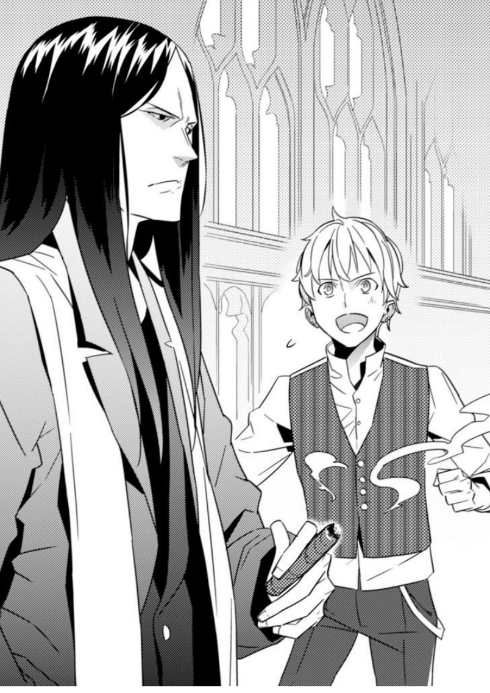

Fate/Strange Fake 1 Prólogo II
Inglaterra, algum lugar de Londres. A Torre do Relógio.
Para a maioria, esse termo se refere a um famoso ponto turístico de Londres.
Para os magos, porém, ele significa algo completamente diferente. É a sede da Associação, que reúne incontáveis magos, e, ao mesmo tempo, a melhor instituição educacional para o treinamento de jovens magos.
Seria justo chamá-la de Vaticano da magia. Desde que a Inglaterra existe, ela produziu mago de primeira linha após mago de primeira linha, cada um elevando a arte da magia a um novo patamar.
"Merda..."
Uma palavra indigna de uma instituição tão austera ecoou pelos corredores.
"Sabe o que você é? Em uma palavra, um imbecil", disse um homem na casa dos trinta anos, repreendendo o rapaz à sua frente. Seus cabelos longos tremularam com a brisa enquanto ele xingava.
Usava um casaco vermelho com ornamentos dourados nos ombros, e seu rosto exibia uma expressão tremendamente azeda.
Mas o rapaz à sua frente respondeu desesperadamente... "Ah, qual é! Pelo menos me descreve com três palavras!"... com uma resposta um tanto fora do tom.
"Você é um cretino e um imbecil. Não existem outras palavras para descrevê-lo."
O jovem permaneceu firme, sem se intimidar com o homem severo.
"Mas eu quero muito, muito participar, professor! Eu preciso ir pros Estados Unidos por causa da Guerra do Santo Graal!"
"Puta que pariu! Não vá por aí berrando sobre isso nos corredores! Seu imbecil incurável! Droga... onde foi que você ouviu falar disso? Não é exatamente um assunto ultrassecreto, mas também não é algo que um pirralho estragado como você deveria saber!" O professor deu uma bronca no jovem insistente depois de se certificar de que não havia ninguém por perto.
Ele era um instrutor da Associação, a melhor instituição de ensino do mundo mágico, e era conhecido por todos como Lord El-Melloi II. Ao que parece, aquele não era seu verdadeiro nome, mas todos que o conheciam o chamavam assim por respeito.
Embora ainda fosse jovem, dizia-se que ele era o melhor palestrante da Torre do Relógio. Todo estudante que já fizera um curso com ele acabava se tornando um mago de primeira linha. Seus alunos se tornavam famosos pelo mundo entre os magos por seus feitos.
Por causa disso, muitos magos lhe prestavam respeito e lhe haviam dado vários apelidos, como "Professor Charisma", "Mestre V" e "Great Big Ben 9 London Star".
Ele próprio, no entanto, não tinha grandes feitos em seu nome, e parecia um tanto irritado por seus alunos roubarem os holofotes.
Mas, no momento, o que o irritava especificamente era o jovem parado à sua frente, que também era um de seus alunos.
Em resposta à pergunta do professor sobre a Guerra do Santo Graal, o rapaz respondeu casualmente: "Ontem, alguns professores e administradores da Associação estavam numa reunião do conselho numa das salas do subsolo, né? Sabe aquele mestre bonequeiro famoso, o Senhor Rohngall? Foi a primeira vez que eu vi ele pessoalmente!"
Ao ouvir a resposta do aluno, a expressão de El-Melloi ficou indefinida, talvez de pura fúria. Ele agarrou o rosto do rapaz com a mão e sibilou: "Por que diabos você sabe o que aconteceu naquela reunião?"
"Eu fiquei meio curioso, então fiquei escutando escondido!"
"Aquela era uma reunião ultrassecreta, seu idiota! Eles devem ter montado dúzias de Campos Limitados!"
O rapaz desviou o olhar. "Er, bem, é que eu sei que não devia, mas fiquei muito, muuuuito curioso..." respondeu, em tom de desculpa.
"Aí eu pensei: por que não tentar hackear o próprio Campo Limitado da sala? E olha só, funcionou!"
... silêncio.
O uso da palavra "hackear" entre magos não era uma particularidade dele; pelo contrário, seu uso era bastante comum entre os magos mais jovens. O que ele de fato fizera provavelmente não tinha nada a ver com hackear ou invadir sistemas; o mais provável é que quisesse dizer que burlara o Campo Limitado sem ser notado, se infiltrara na reunião e ouvira tudo escondido.
Flat Escardos. Ele era o aluno mais antigo de Lord El-Melloi II.
Embora tivesse entrado na tutela de El-Melloi ainda jovem, passara depois muitos anos na Torre do Relógio, incapaz de se formar.
Para descrevê-lo em uma palavra, só os xingamentos de El-Melloi fariam justiça.
Usando algumas palavras a mais, porém, seria justo descrevê-lo como um homem de potencial mágico e talento sem limites. Um homem que, infelizmente, carecia por completo da capacidade de usar esse talento para qualquer coisa útil.
Era o filho mais velho da linhagem Escardos, uma família que vivia na costa do Mar Mediterrâneo. Esperava-se que Flat fosse um mago possuidor de Circuitos Mágicos raramente vistos, além do talento necessário para controlá-los, mas...
Infelizmente, seu talento mágico não servia de nada, pois lhe faltava a disposição severa necessária a todo mago.
No começo, ele fora celebrado como um prodígio e estudara com vários professores. Com o tempo, porém, todos começaram a reclamar de Flat, então, no fim, ele acabou nas mãos de Lord El-Melloi II, porque já não havia mais ninguém disponível.
Os anos se passaram. À medida que os talentos mágicos de Flat se desenvolviam, ele passou a superar todos os outros alunos. Outros professores não conseguiam obter os mesmos resultados com os seus. Isso era ótimo para a reputação de Mestre V.
Dito isso, Flat tinha problemas demais em todas as outras áreas, e por isso continuava sem conseguir se formar na Torre do Relógio.
Normalmente, Lord El-Melloi II jamais ignoraria as fraquezas de um aluno, sem querer mandar ao mundo um mago ainda despreparado. Mas, nessa ocasião, e só nessa, começara a se arrepender de ter mantido essa postura.
"Um idiota talentoso é o tipo mais perigoso de idiota..." disse Mestre V calmamente.
Ele já havia ultrapassado a raiva. Tinha alcançado um tipo de iluminação ascética. Ainda assim, parecia azedo como sempre. Deu um tapa no aluno e disse: "Vou fingir que nunca ouvi nada disso. Agora para de me encher o saco com esse assunto."
"Eu não vou incomodar, professor! É só que, sabe, eu preciso de algum tipo de item pra invocar um herói, né?! Eu não faço ideia de como deveria achar uma coisa dessas! Tipo, se eu tivesse um retrato do Napoleão, eu podia invocar o Napoleão?! Um imperador seria o máximo!"

"Se eu fosse o Espírito Heroico Napoleão, preferiria ver você no pelotão de fuzilamento a fazer um contrato com você!"
El-Melloi pensou em simplesmente dar no pé, mas desistiu. Em vez disso, talvez porque alguma coisa na Guerra do Santo Graal lhe tivesse vindo à mente, resolveu fazer a Flat uma pergunta séria. "...Flat, você, sabe... por que quer o Santo Graal? Não consigo imaginar que você leve a magia tão a sério a ponto de querer alcançar a Raiz. Conhecendo você, eu preciso perguntar... você não está pensando em desejar se formar, ou em desejar me irritar como vingança por eu não deixar você se formar, ou alguma outra idiotice dessas, está?"
El-Melloi não estava nem um pouco preparado para a resposta de Flat.
"Porque eu quero ver!"
"...O quê?"
"Quero dizer, seria superirado! É o Santo Graal! Hitler e Goebbels queriam isso pro Terceiro Reich! E o Shi Huangdi e o Nobunaga e o Godzilla também procuraram! Se ele realmente existe, eu tenho que ver como é!"
"O nome dele era Goebbels, não Gobbles. O Godzilla nunca procurou isso. Quanto ao Nobunaga e ao Shi Huangdi, eu não sei, mas historicamente e culturalmente isso simplesmente não parece certo." El-Melloi corrigiu Flat justamente nos pontos que não importavam e, fora isso, permaneceu em silêncio.
Flat esperou um pouco a reação do professor, esperando levar um sermão daqueles. Por fim, El-Melloi suspirou e, com calma e bondade, disse: "Você entende o que uma guerra entre magos realmente implica? É bem possível que você viva coisas piores do que a morte e acabe sendo morto de forma grotesca sem conseguir realizar nada."
"E, mesmo sabendo disso, as pessoas ainda procuram o Graal, né? Então agora eu quero ver ainda mais!"
El-Melloi ia começar a gritar com ele, mandando-o pensar melhor... mas, mesmo que pensasse melhor, aquele imbecil provavelmente chegaria à mesma resposta.
Tendo chegado a essa conclusão, resolveu abordá-lo por outro ângulo.
"Então me diz o seguinte: você tem o que é preciso para matar alguém pelo Graal?"
"Uh... e se eu pudesse vencer sem matar ninguém... tipo, a gente podia jogar xadrez, ou..."
"Brilhante! Se seu oponente por acaso for o campeão mundial de xadrez, talvez até funcione! Droga, quem sabe vocês não podem até fazer uma luta de xadrez-boxe!"
"...Esse é um problema complicado, né. Eu quero mesmo, mesmo ver os outros Heróis... e, se desse certo, queria fazer amizade com eles também! Se eu ficasse amigo de seis Heróis, eu seria um mago incrível! A gente podia até conquistar o mundo!"
El-Melloi permaneceu em silêncio. Já havia percebido que Flat perdera completamente o fio da pergunta original em algum momento do caminho.
Não pretendia repreendê-lo, nem estava particularmente surpreso com seus delírios.
Pôs a mão no queixo e pareceu pensar em algo por algum tempo... E então voltou a si e disse: "...Isso não vai acontecer." Cortou as fantasias de Flat de forma seca.
"Tá bom, tá bom, então vou continuar contando com o senhor, professor! Ou melhor, Great Big Ben 9 London Star!"
"Não me chama assim na minha cara! E, sinceramente, por que tinha que escolher esse apelido!? Você está tirando sarro da minha cara, não está? Está mesmo tirando sarro de mim, seu idiota!"
"Bom, relaxa! Eu vou pensar em um apelido novo pro senhor. Vai ser perfeito! Tipo... hm... que tal 'Professor Minissaia Mágica'!?"
"Vai se foder e morre!"
No fim, Flat de fato ficou com uma expressão abatida depois de ser tratado de forma tão fria por El-Melloi. Ele vagou pela ala acadêmica da Torre do Relógio. Caminhou por um longo corredor, resmungando de um jeito nada apropriado para alguém de quase vinte anos.
E então... "Ah, que bom que encontrei você." Uma mulher o chamou mais adiante no corredor.
Era uma das funcionárias administrativas da Torre do Relógio. Em suas mãos, trazia uma caixa grande e um pequeno embrulho.
"Esses pacotes são para o seu professor. Você pode entregar a ele?"
E, dizendo isso, enfiou os dois volumes nos braços de Flat. Agora ele teria de levá-los a Mestre V, mas... Poxa, aposto que ele ainda está bravo.
Flat remoía pensamentos negativos enquanto voltava pelo corredor quando, então, foi tomado pela curiosidade sobre o conteúdo da caixa. Usou magia de clarividência para examinar o interior.
Viu uma pequena faca de aparência sinistra, provavelmente concebida para uso ritual.
E então, com seus afiados poderes de clarividência, viu um nome inscrito na lâmina. Uma sensação elétrica percorreu todo o seu corpo.
Não me diga...!
Professor...! O senhor conseguiu isso pra mim!?
Levado por sua própria interpretação equivocada, saiu correndo com a caixa nos braços.
Havia vários símbolos no interior da caixa, mas não estavam escritos em nenhum sistema que ele pudesse ler. Presumivelmente, eram instruções mágicas de algum outro país ou coisa do gênero.
Poderia descobrir como interpretar aquilo em outro momento. Por ora, tinha apenas um objetivo: alcançar o centro da ala acadêmica o mais rápido possível.
"Filho da puta... ele voltou?" Lord El-Melloi II claramente não ficou nada satisfeito ao ver certa pessoa vir correndo pelo corredor em sua direção. Estranhamente, porém, quando Flat o alcançou, segurando um pequeno embrulho, começou a balbuciar sobre coisas que não tinham nada a ver com a Guerra do Santo Graal.
"Pr... professor... o... o senhor... conseguiu... isso... isso aqui... pra... pra mim!" arfou Flat, mostrando o embrulho ao professor. Depois de correr cem metros a toda velocidade, ele já estava completamente sem fôlego.
El-Melloi olhou para o pacote sem entender de início o que era. Quando viu o endereço e o logotipo impressos por fora, percebeu do que se tratava e assentiu. "Então... o que foi? Você quer isso?"
Flat sacudiu a cabeça com fúria, como se fosse um headbanger.
"Tudo bem. Se você quer, pode ficar. Eu também não precisava disso."
Ao ouvir a resposta do professor, Flat irradiou felicidade... a maior alegria que já sentira na vida até então.
"Muito obrigado! Quer dizer, muito, muito obrigado mesmo! Eu estou tão feliz de ser seu aluno, prof!" E saiu disparado, quase chorando de alegria.
"Droga. Quando eu tinha a idade dele, eu era tudo o que ele não é. Aposto que usou clarividência para olhar dentro... O que diabos tinha ali dentro que ele queria tanto?" murmurou El-Melloi, exasperado.
Alguns minutos depois... El-Melloi II havia retornado ao seu quarto. Enquanto pensava em seu aluno problemático, seus olhos caíram sobre um armário.
Era um armário com fechadura dupla, uma física e outra mágica. El-Melloi desfez cuidadosamente os lacres e tirou do interior o objeto guardado ali.
Era um estojo protetor de aparência peculiar, dentro do qual repousava um pedaço de tecido.
À primeira vista, parecia uma antiguidade. Estava se desfazendo e não parecia ter qualquer uso.
No entanto, pelo fato de ser o objeto mais cuidadosamente protegido de todo o quarto, ficava evidente que não se tratava de um simples trapo velho.
"Tomar os outros Servos como seus subordinados e conquistar o mundo, é..." Recordando os delírios de Flat, ele franziu a testa.
"Se eu não conseguisse detê-lo, estava considerando deixá-lo ficar com isto... mas ainda bem que não foi preciso."
Ainda carrancudo, El-Melloi II suspirou aliviado e tornou a fechar o estojo. Pensou então no pacote que acabara permitindo que Flat levasse.
"Suponho que eu não esteja em posição de falar, mas eles realmente deveriam repensar esse sistema de fazer alunos entregarem a correspondência dos outros. Não era nem uma encomenda particularmente importante."
"De todo modo, se isso fizer com que ele esqueça a Guerra do Santo Graal, já é uma boa coisa."
Alguns meses antes... El-Melloi estivera desfrutando de alguns videogames japoneses na privacidade de seu quarto. Sempre que terminava um jogo, preenchia o cartão de pesquisa que vinha na caixa e anotava suas impressões. Era apenas o correto a se fazer.
É claro que precisava pagar postagem internacional para enviar os cartões de volta ao Japão pelo correio aéreo, mas fazia isso mesmo assim. Graças a isso, acabara inscrito em uma série de sorteios e, por consequência, o quarto vivia cheio de todo tipo de brindes de jogos.
Isso não significa que ele preenchia as pesquisas apenas para ganhar brindes. Pelo contrário, tinha pouco interesse na maioria dos produtos que recebia. Ele realmente só queria transmitir suas opiniões aos criadores.
E então, alguns meses depois... Se havia algum item promocional que El-Melloi realmente quisesse, ele simplesmente o encomendaria diretamente. Quando viu o nome do remetente, o de uma empresa japonesa, no pacote que Flat trouxera, presumiu que era só mais um desses brindes. Por isso, nem se deu ao trabalho de abrir antes de deixá-lo com Flat.
E, como suspeitara, não passava mesmo de um item promocional.
Pelo nome da empresa, imaginou que devia ser alguma figure de um jogo de robôs ou coisa parecida, mas...
Na verdade, vinha de um jogo de estratégia chamado "Night Wars of the British Empire". E quanto ao brinde em si...
Alguns dias depois, na cidade de Snowfield, no Center Park.
O sol brilhava forte no céu do meio-dia. Flat havia pego um avião para os Estados Unidos à toda pressa.
É claro, estava completamente despreparado para a viagem.
Tinha uma noção vaga de como a Guerra do Santo Graal funcionava, mas era completamente ignorante quanto aos detalhes.
Ah, Flat... um homem que tinha coisas mais importantes com que se preocupar do que a própria Guerra do Santo Graal...
E um homem que contemplava com alegria os sigilos em sua mão direita.
"Esses... são... incríveis! Se eu usar esses tais... Selos de Comando... eles vão desaparecer?"
Ele esfregava a mão repetidamente. De vez em quando, murmurava alguma coisa... e então os ombros tombavam. Parecia até de coração partido.
"Tá na cara que eles vão sumir. Já sei! Eu simplesmente não vou usar meus Selos de Comando, não importa o que aconteça!"
Aparentemente, Flat descobrira sozinho que os Selos de Comando desaparecem depois de usados. Se qualquer outra pessoa com conhecimento da Guerra do Santo Graal estivesse naquele parque naquele momento, certamente o teria prendido ali mesmo para interrogatório.
Para sua sorte, as únicas pessoas no parque eram pessoas comuns, em sua maioria crianças com seus pais.
Flat ainda encarou os Selos de Comando por mais um tempo. Por fim, abriu o embrulho de pano que segurava.
De dentro, tirou uma faca.
Era uma faca de aparência maligna, tingida de vermelho e preto e, no geral, bastante espalhafatosa.
Mesmo ainda embainhada, a lâmina tinha um brilho estranhamente lustroso, quase elegante.
"Nossa, ainda bem que o Mestre V existe. Quer dizer, tá, ele ficou enrolando, mas já tinha deixado essa relíquia incrível prontinha me esperando!"
Flat ainda não havia percebido que tudo não passara de um engano. Ver a faca com os próprios olhos não o dissuadiu. Muito pelo contrário: aquilo só o deixou ainda mais confiante na veracidade da peça e o impulsionou até os Estados Unidos.
E então... imagine só!... o Santo Graal o selecionara para participar da guerra e lhe concedera Selos de Comando para esse fim.
Ele alternava o olhar entre os Selos de Comando e a faca, e de vez em quando murmurava alguma coisa.
Talvez trinta minutos tenham se passado quando...
Uma cena chocante se desenrolou no parque... e, se quaisquer outros Mestres a tivessem presenciado, certamente teriam desmaiado de espanto.
Para ser franco, foi milagroso. Se seu professor, El-Melloi II, estivesse ali para testemunhar, provavelmente teria elogiado Flat. Claro, estaria furioso enquanto o fizesse. E provavelmente lhe daria algumas joelhadas em lugares impronunciáveis primeiro.
Era um milagre? Ou mero golpe de sorte... ou talvez algo alcançado pelos talentos latentes do próprio Flat? Fosse o que fosse, em certo sentido, Flat acabara desferindo uma afronta poderosa à Guerra do Santo Graal Falsa.
Claro, o único que tinha consciência disso era o próprio Flat.
"Pergunto-te: és tu o Mestre que me invocou?"
"Eu... o quê!?"
Ao ouvir aquela voz assustadoramente nítida, Flat quase pulou do banco e olhou ao redor em busca de quem a havia emitido.
Mas, como antes, só via famílias e casais caminhando. Quem quer que tivesse falado não estava em lugar nenhum à vista.
"'Sim', dizes? Então tomarei isso como uma resposta afirmativa. Nosso contrato está completo. Como parceiros em busca do Santo Graal, sejamos bons camaradas."
"Hã? Hãã!?"
Flat girou o pescoço freneticamente em todas as direções, mas ainda não conseguiu encontrar ninguém que se parecesse com a pessoa que acabara de falar.
Talvez percebendo o pânico do jovem, a voz continuou.
"Pelas estrelas... você me manifestou diante do público e sem sequer um altar! Tens mesmo uma coragem e tanto, ó meu Mestre.... Espera um instante.... Se não usaste altar, então também não recitaste a invocação?!"
"Uh, um... desculpa, tinha muita energia mágica voando por aí e eu estava meio mexendo nisso... e acho que a gente acabou se conectando. Nossa, foi mal mesmo por invocar você desse jeito."
"Entendo... Bem, tudo bem. Na verdade, isso fala bastante da sua excelência como mago."
Ao que parecia, a voz daquele ser meio Servo era transmitida diretamente para dentro da cabeça de Flat.
Ele logo percebeu que a energia mágica fluía pelos Selos de Comando e ia... para algum lugar. Um tanto sem jeito, começou a falar com a voz dentro da própria mente. "Er, hm... acho que talvez não seja bem a hora certa de perguntar isso, mas... os Servos sempre são assim?"
"De forma alguma, rapaz. Eu é que sou um caso especial. Não deixe isso te incomodar." A voz do Servo era mais amigável do que Flat imaginara, e bastante refinada e educada, para completar. Estranhamente, ele não conseguia ter a menor pista do que, especificamente, seria a identidade daquele Servo.
"De qualquer forma, eu não possuo exatamente uma 'identidade' definida, por assim dizer. Pode-se dizer que minha aparência e meus modos são de todos os tipos... embora talvez também não se possa.
É esse tipo de coisa."
Quando se ouve uma voz comum, geralmente dá para dizer se o falante é homem ou mulher; se é velho ou jovem; talvez até qual seja sua profissão. Sempre há algo na voz que denuncia esses detalhes. Mas aquela voz, transmitida diretamente para dentro da cabeça de Flat, era desprovida de qualquer traço distintivo. Era como se estivesse falando com um monstro sem cabeça. "Então, hum... pode me dizer qual é o seu nome?" Uma pergunta casual.
Se a faca em sua mão fosse o que parecia ser, o Servo certamente seria exatamente aquilo que ele esperava.
E, ainda assim, Flat não conseguia conciliar sua imagem de um "Espírito Heroico (?)" com aquela voz dentro da própria cabeça.
O que fazia sentido, já que ele sabia que sua imagem de um "Espírito Heroico (?)" não correspondia exatamente à classe de seres chamados "Heróis".
Mas, bem... em qualquer país onde filmes e romances britânicos fossem populares, não devia haver muita gente que nunca tivesse ouvido falar daquele Servo. É verdade que, em termos de fama, ele não se igualava a Sherlock Holmes ou Arsène Lupin, mas... ao contrário desses dois, ele realmente existira.
Por algum motivo, o Servo permaneceu em silêncio. Flat esperou nervosamente pela continuação, mas...
De repente, um homem corpulento, vestido de preto, entrou em seu campo de visão.
"Ora, ora! Então foi você quem finalmente se manifestou!"
"Eu fiz o quê? Que diabo de manifestação você tá falando, garoto?" O homem de preto olhou para Flat com desconfiança.
Flat soltou um guincho, e seu rosto ficou branco como cera.
Claro que o homem estaria vestido de preto.
Era um policial, com um revólver preso ao coldre na cintura. Ele olhou para Flat... um sujeito sentado num banco em plena luz do dia com uma faca na mão.
"E o que diabos você tá fazendo aí, falando sozinho, rapaz? E pra que é essa faca? Você tá parecendo bem suspeito."
"N-não! Quer dizer! Não é isso!"
Flat se atrapalhou. Tentou explicar o que estava fazendo, quando... "Isso te surpreendeu?"
De repente, o policial começou a agir com gentileza. Entregou o cassetete a Flat.
O objeto parecia um cassetete real... mas, no instante em que ele o segurou, desapareceu no ar.
Surpreso, ergueu os olhos da mão e percebeu que não havia mais policial algum ali. Em vez disso, viu uma mulher usando um vestido positivamente lascivo.
E então a mulher falou com ele. "Achei que seria bom mostrar minha especialidade antes de me apresentar." A voz, embora definitivamente feminina, tinha a mesma sensação da voz que estivera na cabeça dele instantes antes.
"Hã? Hã? O quê!?" Flat ficou ainda mais surpreso.
Então, a mulher desapareceu bem diante de seus olhos e... "Peço desculpas por assustá-lo, Mestre. Achei que assim seria mais rápido."
A voz estava novamente na cabeça dele.
Algumas das famílias por perto pareceram notar que havia algo errado. Algumas esfregaram os olhos, outras inclinaram a cabeça, e algumas crianças chegaram a perguntar aos pais por que o policial tinha virado uma mulher e então desaparecido. Claro, tudo foi recebido com risadas.
Pelo que tinham visto e pelo fato de que as marcas deixadas no chão pelos saltos altos da mulher ainda permaneciam, dava para dizer com certeza que aquilo não fora uma alucinação.
A verdade não seria revelada às pessoas comuns que assistiam à cena desconfiadas, mas apenas na mente de Flat. "Permita-me me apresentar mais uma vez. Meu verdadeiro nome é..." Flat aguardou, prendendo a respiração.
Ele sabia qual era a verdadeira forma de seu Servo. Porém, na lenda em que ele aparecia, o Nome Verdadeiro era muito mais importante.
Flat esperou e esperou a voz continuar ecoando em sua mente, mas... quando o Servo finalmente continuou, o que disse o surpreendeu de uma forma completamente diferente.
"Para ser franco, eu não sei."
"Tá falando sério!?"
Flat já tinha se erguido até a metade do banco. Ao perceber que não havia ninguém à sua frente e que devia estar parecendo ridículo, sentou-se de novo, envergonhado, lançando olhares furtivos ao redor.
Sem dar a menor atenção às trapalhadas do jovem, o Servo continuou a falar, com aquela voz sem qualquer característica marcante.
"Ninguém deveria conhecer meu Nome Verdadeiro, exceto talvez eu mesmo... o verdadeiro eu, e não o eu da lenda. ...Ou, talvez, aquele que pôs fim aos meus assassinatos."
A faca que Flat segurava não era uma relíquia verdadeira, mas uma imitação.
Mas, no caso daquele Espírito Heroico... ela era capaz de trazer à tona um espírito muito mais poderoso justamente porque, assim como o próprio Espírito Heroico, era uma imitação criada para consumo público.
Aquele Servo não tinha nome, embora houvesse provas de que um dia vivera neste mundo.
E, ainda assim, ninguém sabia como ele realmente parecia.
Ninguém conhecia sua aparência; seu Nome Verdadeiro; se era homem ou mulher; ou mesmo se era humano. Ele... embora seu gênero fosse desconhecido... era um símbolo do medo; aquele que aterrorizara o mundo. As pessoas o imaginaram de incontáveis formas, e ele se tornou tema de miríades de histórias e teorias.
Talvez um médico; talvez um professor; talvez um aristocrata; talvez uma prostituta; talvez um açougueiro; talvez um demônio; talvez algo feérico; talvez uma conspiração; talvez loucura.
Nem sequer era certo se se tratava de uma única pessoa. O medo que as pessoas sentiam dele foi explorado para criar todo tipo de história... e então tudo foi unificado em uma única lenda.
Mas ele não era apenas uma lenda. Existira de fato.
Para Flat, que passara muitos anos na Torre do Relógio, sua lenda provavelmente era a mais próxima de casa.
Todos conheciam a prova de sua existência.
No distrito de Whitechapel, em Londres... foram encontrados os cadáveres macabros de cinco prostitutas. Não poderia haver prova maior.
"Dito isso, existe um nome pelo qual sou conhecido e pelo qual me identifiquei em minhas cartas."
"Jack, o Estripador."
Alguns meses antes... El-Melloi II jogara o jogo "Night Wars of the British Empire".
Ele havia encomendado o jogo do Japão pelo correio, achando que seria um jogo de guerra sobre os vários cavaleiros lendários da Inglaterra.
Infelizmente, os japoneses não distinguem na escrita os homófonos de "knight" e "night", e, nesse caso, significavam o segundo. O protagonista do jogo era inspirado numa pessoa real, que vagava pelas ruas de Londres à noite enquanto lutava contra a personalidade enlouquecida dentro de si. Às vezes, acabava até enfrentando demônios.
Era um daqueles jogos de aventura.
Mesmo não sendo o que esperava, El-Melloi jogou até terminar e escreveu uma lista com suas opiniões honestas. Em primeiro lugar, anotou que "o título do jogo deixa a desejar".
Quando virou o cartão de pesquisa, notou que havia informações sobre os prêmios que poderia ganhar nos sorteios.
Se você enviar este cartão, poderá ser um dos 100 sortudos a receber uma réplica de uma faca com a assinatura de Jack, o Estripador! (Bainha inclusa)
Como se Jack, o Estripador, fosse inscrever o próprio nome numa faca.
Ele bufou diante da ideia. Perdeu o interesse no prêmio em si e voltou a registrar impassivelmente suas observações sobre o jogo.
E, durante todo esse tempo, não fazia a menor ideia do que aquele cartão acabaria desencadeando.
E então, alguns meses depois... Flat estava sentado diante da fonte no parque, mantendo uma conversa mental com o ser em sua cabeça.
Em pouco tempo, parecia já ter se acostumado à situação e falava naturalmente com aquela existência.
"Então você tá dizendo que, por não ter sido ninguém em particular, ganhou o poder de virar qualquer pessoa, é isso..."
"Exato. Você deu sorte, no entanto. Se eu tivesse me manifestado em qualquer outra classe de Servo, eu teria possuído seu corpo e partido numa chacina enlouquecida pra... bem, digamos só que, a essa altura, eu já estaria nadando em sangue."
"Uh..." Flat achou difícil interpretar aquilo como brincadeira. Não conseguiu evitar olhar em volta para os rostos das pessoas ao redor.
Se Jack partisse para o massacre, a maioria dos magos se preocuparia com o fato de pessoas comuns ficarem sabendo da existência da magia. Flat, porém, sentiu alívio por um motivo completamente diferente, bastante pouco típico de um mago.
"H-hum... a propósito, qual é a sua classe? Você é Assassin?"
"Ah, minhas desculpas. Sou da classe Berserker."
"Hã?"
A resposta do Servo deixou Flat em completo caos.
Flat não era um ignorante total... fizera uma pesquisa básica sobre a Guerra do Santo Graal.
Sabia que Servos da classe Berserker ganham poder em troca da própria sanidade.
Talvez Jack tenha entendido por que Flat estava confuso. Ele começou a explicar, de forma perfeitamente direta, a natureza de sua classe.
"Veja, eu fui consagrado na lenda como um símbolo de loucura. A classe do guerreiro insano é a única que realmente combina comigo."
"Ah... tipo menos com menos dá mais!" Qualquer mago normal... ou, na verdade, qualquer pessoa normal... teria de se perguntar se aquela explicação fazia algum sentido. Flat, é claro, aceitou sem pestanejar.
Isso, por sua vez, surpreendeu Jack, que murmurou algo antes de corrigir a própria explicação. "Se eu fosse a alma de uma pessoa concreta, isso provavelmente não teria acontecido. Mas, como eu era apenas um emblema da loucura, suponho que deixaram passar. É algo muito próximo de um milagre. Por outro lado, talvez exista algo peculiar nesta própria Guerra do Santo Graal."
"Uau. Servos são incríveis mesmo!" Como sempre, uma resposta simples da parte de Flat. Lembrando-se de uma questão que o deixara inquieto, "ele" mudou de assunto. "Aliás, quando apareci diante de você na forma de um policial, por que você não tentou me hipnotizar... ou usar algum outro tipo de sugestão mágica? Isso não é o tipo de magia mais básico?"
"Hã? ...Er, bem, eu achei melhor primeiro garantir que o policial entendesse o que estava acontecendo."
"Por um momento eu temi por sua competência, rapaz."
Pressentindo uma ponta de constrangimento na voz dentro da cabeça, Flat mudou de assunto. "Então, se você encontrar o Graal, o que vai desejar?"
"Hrm... como você é meu Mestre, suponho que devo lhe dizer... mas peço que, por favor, não ria de mim."
O Berserker são hesitou por um momento antes de deixar sua voz ecoar outra vez na mente de Flat.
"...Quero saber quem matou aquelas cinco prostitutas de Whitechapel... em outras palavras, quero conhecer minha própria identidade. Só isso."
"Sua identidade..."
"Sou apenas uma fábula, sem presença real. E, ainda assim, quando penso nas pessoas inventando histórias e hipóteses sobre minha verdadeira identidade e natureza... isso me apavora. Não espero que você me entenda, já que possui um corpo, um nome e um passado para chamar de seus." Sua voz soava apagada.
Ele só queria saber quem era.
Era um desejo incomum, mas ao mesmo tempo provavelmente era tudo o que aquele Servo desejava.
Flat refletiu por um instante. Então, de maneira direta, fez uma pergunta ao Servo. "Então, quando descobrir quem você é, o que vai fazer? Tipo, se alguém te invocar fora de uma Guerra do Santo Graal... você vai aparecer no corpo da pessoa que um dia foi?"
"Isso pode muito bem acontecer. Embora minha forma atual seja diferente da pessoa que fui um dia, ainda é verdade que eu já fui um assassino em série. As lendas sobre mim se baseiam nessa premissa. Se sou uma pessoa de lenda que também existiu de fato, então cabe a mim ser o mais fiel possível à minha própria realidade." A maneira como falava transmitia, de algum modo, uma sensação de solidão.
"Isso não quer dizer que não existe um 'você' de verdade?" disse Flat, sem rodeios e sem o menor senso de etiqueta.
Flat era exatamente esse tipo de pessoa absurdamente franca. O Servo foi pego de surpresa, e a voz que ecoava na cabeça de Flat refletiu isso.
"...As pessoas costumam lhe dizer que lhe falta decoro?"
"Ahaha, dizem demais! O tempo todo! Valeu!"
"Eu não estava elogiando você... mas, bem, tudo bem. Não precisamos discutir isso mais. De qualquer forma... me surpreende que tenha decidido me invocar. Você não podia esperar de mim nem o poder de um Herói nem a moralidade de um homem."
Era um pensamento perfeitamente razoável.
E isso sem entrar no mérito de ter sido o próprio Jack, o Estripador, quem o disse. Qualquer um hesitaria até em estar perto dele, quanto mais em invocá-lo como Servo.
Flat, franco como só ele, respondeu: "Eu adoro gente como você! Sabe, aqueles caras cheios de mistério, com identidades secretas e tudo mais!"
"...
" "Qual é, isso é muito maneiro! Além do mais, você é um cara incrível! Isso não é ótimo!?"
Talvez ele tivesse a intuição de um mago, mas seu temperamento estava... longe de ser o de um mago.
Se havia um único aspecto em que seu temperamento combinava com o de um mago...
Era que suas intuições diferiam, ainda que só um pouco, das da maioria das pessoas comuns.
Colocando da forma mais generosa possível, ele era dotado de uma curiosidade exageradamente abundante... e magos devem ser curiosos.
Embora não estivesse claro de que maneira o Servo interpretou a resposta de Flat... Ele, um Servo que deveria ser composto de pura loucura e selvageria, se preparou para a batalha. Com um mínimo de otimismo na voz, falou.
"Muito bem, meu Mestre. Por onde começaremos? Com minhas habilidades, podemos nos infiltrar em qualquer lugar e matar os Mestres inimigos onde estiverem! Aguardo suas ordens. Quais serão elas?" O Servo parecia claramente empolgado.
Seu Mestre, por outro lado, apenas permaneceu sentado com um sorriso tranquilo no rosto. Verdadeiramente, ele era o menos parecido com um mago entre todos os magos.
"O tempo tá tão bom hoje. Vamos só curtir o sol por um tempo. Tá quentinho!"
"O quê...!?"
Assim começou a jornada de um jovem que nada sabia sobre tragédia e do Espírito Vilanesco que não produzia nada além de tragédia.
Havia apenas uma coisa que compartilhavam: não existia ninguém mais distante dos ideais da Guerra do Santo Graal do que os dois.
Apenas isso, e nada mais.